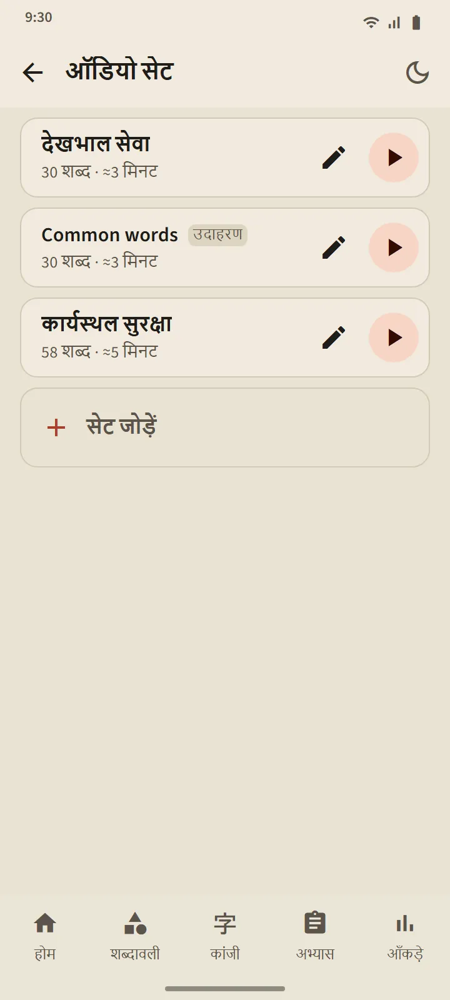
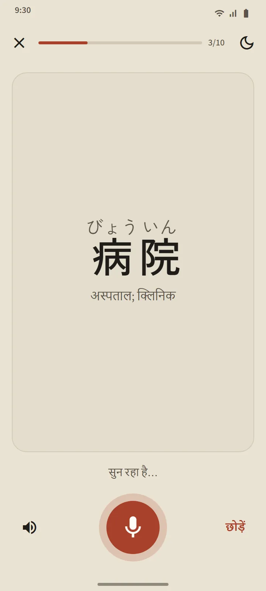

ख़ुद बनाए ऑडियो सेट
5 से 100 शब्दों का सेट बनाएँ: एक-एक करके खोजकर जोड़ें, या किसी भी शब्दावली सेट से एक साथ ले लें। प्लेयर हर शब्द जापानी में पढ़ता है, फिर ऐप की भाषा में उसका अर्थ (सिर्फ़ जापानी सुनने के लिए "अर्थ भी बोलकर सुनाएँ" बंद कर दें)। मौजूदा शब्द फ़ुरिगाना के साथ बड़ा दिखता है; सूची में किसी शब्द पर टैप करके सीधे वहाँ पहुँचें।
नियंत्रण: शफ़ल, दोहराव, और 0.75×, 1× या 1.25× की गति। स्क्रीन बंद होने या दूसरे ऐप पर जाने के बाद भी प्लेयर चलता रहता है; प्लेयर की सूचना और हेडसेट के बटन नियंत्रण में रहते हैं।
- मुफ़्त संस्करण: 3 सेट। Premium: असीमित, और एक सेट को एक ऑडियो फ़ाइल (M4A) के रूप में डाउनलोड किया जा सकता है।
- एक नमूना सेट, "Common words", सबसे ज़्यादा इस्तेमाल होने वाले शब्दों से अपने-आप बनता है; उसे अपनी मर्ज़ी से बदलें या हटाएँ।
- सुनने से किसी शब्द का शेड्यूल या चरण कभी नहीं बदलता।

बोलकर अभ्यास: बोलें और आगे बढ़ें
याद है या महारत चरण का शब्द कार्ड पर दिखता है; माइक्रोफ़ोन अपने-आप चालू होता है, आप शब्द बोलते हैं, और अगर आपका फ़ोन उसे पहचान ले तो अगला शब्द आ जाता है। अगर नहीं पहचाने, तो स्क्रीन दिखाती है कि उसने क्या सुना और फिर से सुनती है; तीन कोशिशों के बाद वह एक उदाहरण सुनाती है। माइक्रोफ़ोन बटन, उदाहरण बटन और छोड़ें हमेशा मौजूद रहते हैं। एक सत्र में 5, 10, 15 या 20 शब्द होते हैं।
आपकी आवाज़ आपके फ़ोन की स्पीच-रिकग्निशन सेवा (आमतौर पर Google की) से प्रोसेस होती है; ऐप उसे न रिकॉर्ड करता है, न सहेजता है। केवल शब्द को परखा जाता है, आपके लहजे को नहीं। चूँकि स्पीच रिकग्निशन ग़लत सुन सकता है, यह अभ्यास किसी शब्द का चरण कभी नहीं घटाता।

कांजी लिखना: स्ट्रोक-दर-स्ट्रोक
उन कांजी के लिए जो याद है या महारत चरण में हैं। केवल अर्थ और पठन दिखाए जाते हैं; आप पूरी चौड़ाई के बॉक्स में लिखते हैं, और उँगली उठाते ही हर स्ट्रोक जाँचा जाता है: आकार, दिशा और क्रम। सही स्ट्रोक मानक आकार में बैठ जाता है; ग़लत क्रम या उलटी दिशा एक वाक्य के साथ नामंज़ूर होती है; दो चूक के बाद अगला स्ट्रोक अपने शुरुआती बिंदु के साथ हल्का दिखाई देता है।
- याद से: ख़ाली बॉक्स। छाया के साथ: कांजी हल्का दिखता है, वार्म-अप के लिए। क्रम से टैप करें: कांजी पूरा दिखता है; उसके स्ट्रोक क्रम से टैप करें।
- एनिमेशन बटन किसी भी समय पूरे कांजी को लिखे जाते हुए दिखाता है।
- कोई कांजी तब लिख सकते हैं में गिना जाता है जब आप उसे दो अलग-अलग दिन बिना मदद के याद से लिख दें; एक सत्र में 5, 10 या 15 कांजी।


हर जगह उच्चारण
शब्द कार्ड, कांजी कार्ड, शब्द का विवरण, काना के पाठ, व्याकरण के उदाहरण और सुनने के प्रश्न, सब आपके फ़ोन के जापानी टेक्स्ट-टू-स्पीच इंजन से पढ़े जाते हैं, इसलिए कोई ऑडियो फ़ाइल डाउनलोड नहीं करनी पड़ती। आवाज़ की गुणवत्ता हर फ़ोन के इंजन पर निर्भर है।